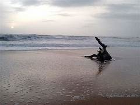
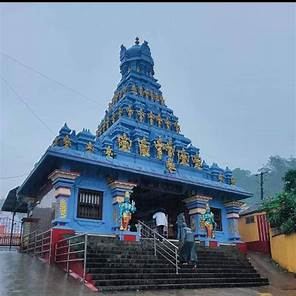
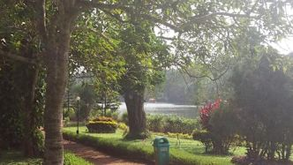
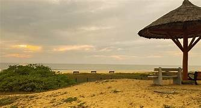

Explore Mangalore
Discover the charm of the coastal city — from heritage temples to serene beaches, there’s something for every explorer.

Panambur Beach
Enjoy camel rides, kite festivals, and stunning sunsets.

Kadri Manjunath Temple
One of the oldest temples in South India, rich in heritage.

Pilikula Nisargadhama
A nature and science park with a zoo, lake, and heritage village.

Tannirbhavi Beach
Unwind with sea breeze, sunset views, and long coastal walks.
St. Aloysius Chapel
Admire 19th-century Italian-style frescoes and stained glass art.

Central Market
A lively market for fresh produce, spices, and coastal delicacies.